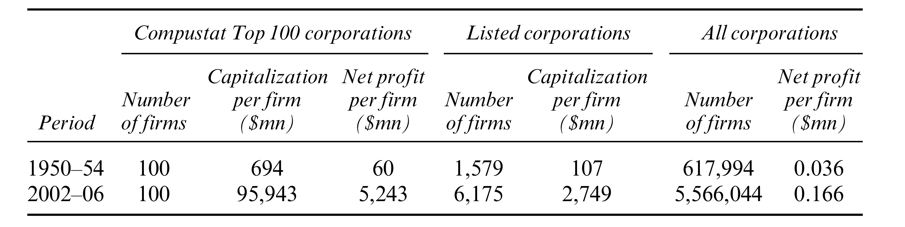
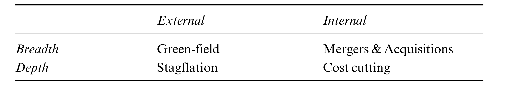

| 14 | Differential accumulation and dominant capital |
ad omnia et contra universos hominess – in all matters and against all men
—An eleventh-century count pledging to serve his lord.Quoted in François Louis Ganshof’s Feudalism
Creorder
Creating order
Historical society is a creorder. At every passing moment, it is both Parmenidean and Heraclitean: a state in process, a construct reconstructed, a form transformed. To have a history is to create order — a verb and a noun whose fusion yields the verb-noun creorder.
A creorder can be hierarchical as in dictatorship or tight bureaucracy, horizontal as in direct democracy, or something in between. Its pace of change can be imperceptibly slow — as it was in many ancient tyrannies — yielding the impression of complete stability; or it can be so fast as to undermine any semblance of structure, as it often is in capitalism. Its transformative pattern can be continuous or discrete, uniform or erratic, singular or multifaceted. But whatever its particular properties, it is always a paradoxical duality — a dynamic creation of a static order.
Democratic creorders — of which the most notable example is the demos kratia of Ancient Athens — are relatively few and far between, so it is difficult to generalize about them. But given that such societies are to some extent free to create their own fate, they can choose to do so rapidly or slowly.
A power creorder doesn’t have that choice. Power means the ability to impose order, and imposition presupposes resistance — resistance from those on whom order is imposed and from others who wish to impose their own. This ever-present tension between force and counter-force makes a power creorder inherently unstable. Slack on one side unleashes pressure from another, a greater force in one direction trumps over a weaker force in the other. And since to overcome resistance is to create a new order, the very presence of power spells a built-in pressure for change.
Historically, however, this pressure tended to remain latent. Judged by contemporary standards, most hierarchical regimes seem highly stable, if not entirely static. Although dynamic in potential, the pace of their creorder was usually restricted. It was capped by material limitations and symbolic inhibitions, and it often slowed to a halt by the very success of rulers in eliminating opposition. Regimes with ‘surplus’ energy usually spent it on conquering and subjugating other societies.
In capitalism, these internal limitations are greatly loosened by two unprecedented developments: (1) a permanent revolution of the scientific-ideological mindset that enables rapid material and societal transformations; and (2) a relentless process of pecuniary capitalization that translates and reduces these heterogeneous transformations of quality into universal changes in quantity.
Mediated through the market, the convergence of these processes enables capitalists to creorder in ways that no other ruling class has ever been able to. At the most basic level, it allows owners to lever technical change — rather than techniques per se — as a tool of power. At a higher level it lets them use the monetary symbols of prices and inflation to restructure power. And at a still higher level, and perhaps most importantly, it permits them to reorganize power directly, by buying and selling vendible ownership claims. In this sense, the capitalist market, with its universalizing price architecture and encompassing discounting, is not a diffusion of power but the very precondition of power.
The power role of the market
The power role of the market cannot be overemphasized — particularly since, as we have seen throughout the book, most observers deny it and many invert it altogether. Analytically, the inversion proceeds in three simple steps. It begins by defining the market as a voluntary, self-regulating mechanism. It continues by observing that such a mechanism leaves no room for the imposition of power. And it ends by concluding that power and market must be antithetical, and that they can coexist only insofar as the former ‘manipulates’ and ‘distorts’ the latter.
An example of this inversion is Fernand Braudel’s historical work Civilization & Capitalism (1985). According to Braudel, capitalism negates the market. In his words, there is a conflict between a self-regulating ‘market economy’ on the one hand, and an anti-market ‘capitalist’ zone where social hierarchies ‘manipulate exchange to their advantage’ on the other (Braudel 1977; 1985, Vol. 1: 23–24 and Vol. 2: 229–30). A similar sentiment is expressed by Cornelius Castoriadis, when he proclaims that ‘where there is capitalism, there is no market; and where there is a market, there cannot be capitalism’ (1990: 227).
The root of the error here lies right at the assumptions. Capitalism cannot negate the market because it requires the market. Without a market, there can be no commodification, and without commodification there can be no capitalization, no accumulation and no capitalism. And the market can fulfil this role precisely because it is never self-regulating (and since it is never self-regulating, there is nothing to ‘manipulate’ or ‘distort’ in the first place). Price is not a utilitarian–productive quantity, but a power magnitude, and the market is the very institution through which this power is quantified. Without this market mediation of power, there can be no profit and, again, no capitalization, no accumulation and no capitalism.
And there’s more. The market doesn’t merely enable capitalist power, it totally transforms it. And it achieves this transformation by making the capitalist mega-machine modular. The blueprint of this new machine, unlike those of earlier models, is very short. Its essential component is the capitalization/ accumulation formula. The formula is special in that it doesn’t specify what the mega-machine should look like. Instead, it stipulates a ‘generative order’, a fractal-like algorithm that allows capitalists to reconstruct and reshape their mega-machine in innumerable ways. The algorithm itself changes so slowly that it seems practically ‘fixed’ (the basic principle of capitalization hasn’t changed much over the past half-millennium). But the historical paths and outcomes generated by this algorithm are very much open-ended, and it is this latter flexibility that makes the capitalist creorder so dynamic.218
How to measure accumulation?
So let’s start with capitalization, the ‘raw material’ of accumulation. In its immediate appearance, capitalization is just a number, a quantity of dollars and cents. On its own, it can tell us nothing about power, or about anything else for that matter. To gain a meaning, it has to be benchmarked.
‘Real’ benchmarking?
Begin with the yardsticks that don’t stick. For most economists, the proper benchmark is a price index. Capitalization, like any other ‘economic’ entity, acquires its meaning when expressed in ‘real terms’; and the way to determine this ‘real’ quantity is to divide the dollar value of capitalization by its unit price. Accumulation is the rate of growth of this ‘real’ ratio.
Unfortunately, this procedure won’t do. As we have seen, the category of ‘real capital’ is logically impossible and empirically embarrassing. Capitalization has no material units to measure its quantity (and without a quantity there is no definite unit to price); the replacement cost of material artefacts owned by capitalists usually is a small fraction of their overall capitalization; and, as a coup de grâce, over time this replacement cost tends to oscillate inversely with capitalization.
A popular escape route is to express ‘real’ capital in terms of purchasing power. According to this logic, capitalists, like all economic ‘agents’, are in hot pursuit of hedonic pleasure. All they seek is consumption — immediate or postponed — and the more the better. In this context, the thing to do is benchmark capitalization not against its own elusive price, but relative to the price of consumer goods and services. Simply divide the dollar value of capitalization by the CPI and you are done.
But this procedure isn’t simple either. Capitalists of course are concerned with consumption. Yet, beyond a certain level of riches, their consumption is only marginally affected by their accumulation. And if only a fraction of their fortune is earmarked for consumption, what should the remainder be benchmarked against?
Moreover, it turns out that even the proportion that does get consumed is rather tricky to deflate. In liberal tracts consumption is a hedonic affair between a person and the things he or she consumes. Not so for accumulation-induced consumption. Here, the relationship is inter-personal. The goal is not to achieve hedonic pleasure but to establish differential status: to demonstrate that the consumer can afford something that others cannot. Veblen (1899b) labelled this demonstration ‘conspicuous consumption’.
This new emphasis puts the standard deflating method on its head. From a naïve utilitarian perspective, higher prices for consumer goods and services imply lower purchasing power and therefore a smaller ‘real capital’. For the conspicuous consumer, though, the exact opposite is true: since higher prices bestow a higher differential status, they generate greater utility and therefore imply a larger ‘real capital’.219
It’s all relative
The most important critique against ‘real’ measures of accumulation, however, is that they are irrelevant. Accumulation is not about physical objects or the hedonic pleasure of capitalists. It is about power. And power is not absolute, it is relative. It acquires its meaning only when gauged against other powers.
Of course, the differential nature of power isn’t unique to capitalism. Chieftains gauged their power against other chieftains, lords against other lords, kings against other kings, nation-states against other nation-states. But in these regimes, the comparisons were largely subjective and their social significance more limited. It is only in capitalism, where power is translated into the universal units of capitalization, that the differential nature of power really takes centre stage.
Neoclassicists never tire of preaching the imperative of maximizing profit and wealth, although they rarely if ever explain what ‘maximization’ means in practice or how it can be achieved in reality.220 And not that they should bother — for in the real world of capital, the reference points are all relative.
A capitalist investing in Canadian 10-year bonds typically tries to beat the Scotia McLeod 10-year benchmark; an owner of emerging-market equities tries to beat the IFC benchmark; investors in global commodities try to beat the Reuters/Jefferies CRB Commodity Index; owners of large US corporations try to beat the S&P 500; and so on. Every investment is stacked against its own group benchmark — and, in the abstract, against the global benchmark.
Modern-day capitalists have long abandoned the vain search for Archimedean absolutes for readily observable Newtonian differentials. And it is not as if they had a choice. The shifting sands of the capitalist creorder leave no absolute yardstick standing. ‘All that is solid melts into air, all that is holy is profaned’, observed Marx and Engels (1848: 63). The only thing capitalists can relate to are the broad processes themselves: they assess their own performance by comparing it to the performance of others.
In this quest, the goal is not to maximize but to exceed, not to meet but to beat. To achieve a 5 per-cent profit growth during recession is success; to gain 15 per cent when others make 30 is failure. Even declining profit can be a triumph, provided it ‘outperforms’ the average:
In normal circumstances, the results issued by Mr Dimon’s firm [JPMorgan Chase] on Thursday — a halving in second-quarter profits, and a bleak outlook for the rest of the year — would have sent investors rushing for the exit. But, with fund managers’ nerves jangled by almost a year of credit-related bad news, JPMorgan’s ability to outperform most of its rivals and beat analysts’ predictions was enough to send its shares 11 per cent higher at midday in New York.
(Guerrera 2008)
Maximizing profit for absolute accumulation is bordering on the occult. The only real thing is differential accumulation.221
Unlike the impossible absolute and elusive maximum, the ‘normal’ and ‘average’ are everywhere. Numerous organs of the state of capital — from the news media listings of Fortune, Business Week, Far Eastern Economic Review, Euromoney, Financial Times and Forbes, to the private databases of Bloomberg, Compustat, Datastream and Global Insight, to national and international organizations — keep churning new benchmarks at a neck-breaking pace. Soon enough, they’ll have us swamped with more benchmarks than assets.
Every business and economic category is averaged across the world and over time. Indeed, so real is the zeal that even future projections of these magnitudes are now benchmarked against their own so-called ‘consensus forecast’. The benchmarks are classified by every imaginable criterion, separately and in combination — including size, nationality, sector, duration, risk, liquidity and ‘investability’, among others. Indeed, the notion of ‘normality’ as a benchmark for action and achievement has been so thoroughly accepted that it now dominates numerous non-business spheres, from education and the arts to sports and foreign relations. To be real is to be relative.
Differential capitalization and differential accumulation
The capitalist creorder
The logic of this relative architecture was spelled out by the eighteenth-century invention of the metric system. The system was purposefully linked to the magnitude of the planet (setting the metre equal to 1/40,000,000th of the earth’s circumference). This anchor, hoped its inventors, would be the benchmark for the measure of all things. ‘[A] meter based on the size of the earth’, marvelled Pierre-Simon Laplace, ‘would entitle even the most humble landowner to say: “The field that nourishes my children is a known portion of the globe; and so, in proportion, am I a co-owner of the World”’ (quoted in Alder 2002: 90).
Capitalization enables a similar partition of ownership — only in ways that are infinitely more complex and fluid than anything Laplace could have imagined, and not nearly as congenial or assuring. This latter partition is counted not in metres but in money prices, and it parcels the control not only of land but potentially of every aspect of human society. It is the mapping of capitalist power at large.
Of course, not all power gets capitalized — but then all capitalization is power. And as more and more forms of power get capitalized, capitalization becomes the overarching architecture of power. This view helps us transcend the conventional separation between power and capital. From the hierarchical perspective of Marx, the engine is productive capital. This is the basis on which the entire social structure of power gets built. The Weberians flatten the picture, arguing that control over the means of production is merely one of many different types of authority.222 Our own framework fuses the two logics. Capital is still the starting point, as Marx correctly insisted. And ownership of the means of production indeed is merely one form of power, as the Weberians argue. But capital is not means of production; it is a mode of power. And although there are many different forms of authority and power, in principle they can all be subsumed by capital.
In this way, the structure of ownership encompasses and reflects the entire gamut of capitalized power. In Chapter 13 we described this mode of power as the ‘state of capital’, a mega-machine that comprises both corporations and government organs. The cogs of this mega-machine consist of factory workers, corporate accountants and chief executives, along with government employees, bureaucrats and top officials. All are part of the same process of capitalization and accumulation, and in that sense all are integrated into the same map of ownership.
In this framework, the total dollar value of capitalization maps the power that capitalists exert over society. Any given fraction of this totality denotes a corresponding, undifferentiated share of that power. Individual or groups of capitalists secure their claims through particular organizations, institutions and processes, so the content of their power is always qualitatively unique. But because this power is exercised over society as a whole, its form can be quantified in universal monetary units; that is, as claims on the entire process of social restructuring. This universality enables capitalists to gauge their power based on their relative stakes: an owner with 1 per cent of the total has twice the power of one with only 0.5 per cent and half that of another with 2 per cent.
But capitalism isn’t simply an order; it is a creorder. It involves the ongoing imposition of power and therefore the dynamic transformation of society. In this process the key is differential accumulation: the goal is not merely to retain one’s relative capitalization but to increase it. And since relative capitalization represents power, increases in relative capitalization represent the augmentation of power. The accumulation of capital and the changing power of capitalists to transform society become two sides of the same creorder.
This notion of capital as power and accumulation as changes in power stands in sharp contrast to received convention. Political economy keeps the two sets of concepts strictly distinct, and even the most astute observers can do no more than ‘link’ them. When Bowles, Gordon and Weisskopf (1986; 1990) offer to weigh capitalist power relative to that of workers, foreign suppliers and the country’s citizenry, they take capital as a given — and then treat it as a ‘source’ of power. A similar distinction underlies Doug Henwood’s assessment of the growing concentration of wealth. This concentration, he writes, yields ‘extraordinary social power — the power to buy politicians, pundits, and professors, and to dictate both public and corporate policy’ (1997: 4). In this sequence, capitalists first accumulate ‘wealth’ and then use this wealth to acquire ‘power’. The two categories, although intimately linked, are nonetheless separate.
The figurative identity
In our framework, capital accumulation and the changing power of capitalists are one and the same. But this ‘identity’ is only figurative. It consists of converting quality into quantity, of translating and reducing the heterogeneous processes of capitalist power into the universal units of differential capitalization. And this conversion obviously is not an objective process.
First, the relative magnitude of capitalization, although readily observable, is based on the inter-subjective conventions of the capitalist nomos. Second, this relative magnitude cannot be inferred simply by observing the power aspects of the capitalist scene. The fact that a certain corporation was granted a patent, that it had the government move to its side, that it introduced a new technique, or that it acquired a competitor, cannot, in and of itself, tell us much about that company’s rate of differential accumulation.
The way to understand this figurative identity is speculatively. Force is nothing apart from its effect, tell us Hegel and Marcuse; it is always a correspondence between form and content, quantity and quality. Therefore, the way to give capital meaning is by contrasting these two aspects, by juxtaposing the quantitative patterns of differential accumulation, on the one hand, with the qualitative power institutions, organizations and processes that underlie this accumulation, on the other.223
Clearly, any such attempt to jump from qualities to quantities cannot claim the rigour of natural science. But, then, we have seen what happened to liberal and Marxist analyses when they tried to imitate this rigour. They pretended that there is a strict quantitative correspondence between prices, production and accumulation on the one hand and utility and labour values on the other, and then fell flat on their faces when they tried to demonstrate this correspondence.
Capitalists constantly try to force life into a box, to harness creativity, to convert quality into quantity. This is the nature of their power. But they can achieve this conversion only speculatively and inter-subjectively, and there is no point in pretending otherwise. The task is to try to understand this speculative translation. And, in our opinion, the only way to do so is by telling a ‘scientific story’ — a systematic historical analysis that convincingly ties the quantities and qualities of capitalist power.
With these considerations in mind, we propose the following working definition of accumulation:
From a static perspective, the differential power possessed by a particular group of owners is measured by its differential capitalization (DK); that is, by comparing the group’s combined capitalization to that of the average capital unit. If this average is $5 million, a capital worth $5 billion represents a DK of 1,000. This magnitude means that, as a group, the owners of that capital are 1,000 times more powerful than the owners of an average capital.
From a dynamic viewpoint, the change in differential power is measured by the rate of differential accumulation (DA), defined as the rate of change of DK. To achieve differential accumulation, owners need to have their own capitalization grow faster than the average capitalization. Positive, zero or negative rates of DA imply rising, unchanging or falling differential power, respectively.
From a power stance, only capitalists with a positive DA are said to accumulate. These differential accumulators should be the centre of analysis.
The universe of owners
Who are the differential accumulators? To contextualize the answer, let’s backtrack and first consider the universe of owners. In principle, anyone who owns a capitalized asset can be thought of as a ‘capitalist’ to that extent. And since capitalization has penetrated nearly every corner of society, there are plenty of such ‘capitalists’ around. For our purpose, though, this formal generalization is overstretched and misleading.
We can think of two types of assets: those that are held for use and those that are held for accumulation. The vast majority of owners hold the first type. They own articles that they use, such as their family home, vehicle and other ‘big-ticket’ items; and they own assets that they intend to use — primarily savings and pensions. The aggregate magnitude of these assets could be substantial, but their individual size tends to be small. Most importantly, these assets give their owners little or no control over other people.
A small minority of owners holds the second type of assets. These assets are financial instruments, consisting mostly of equity and debt claims on corporations and governments. They are held not for use, but for accumulation. Their overall magnitude is large and so is their individual size. And, most importantly, they give their owners direct and indirect control over other people.224
This classification narrows our search. It is obvious that the first group of people — namely, most of humanity — is pretty much out of the accumulation race. The vast majority of the population is simply trying to make ends meet — and, if they are lucky, also to save a bit for emergency and old age. Since they do not pursue power, they offer no reference point to accumulators and hence do not figure in the benchmark.
The relevant universe for differential accumulation comprises the second group: the owners of financial instruments. They are the capitalists. In our discussion, though, we focus not on individual owners, but on groups of owners. The reason is that the vendibility of capital creates centrifugal as well as centripetal forces, and the centrifugal forces limit the power of any single capitalist. In counteracting this effect, the elementary solution is the corporation, and, eventually, the corporate–government coalition (overt or covert). For this reason we concur with Veblen that the corporation itself, regardless of who runs it, was historically necessary for the survival of capitalism. Without this institution, which for Marx signalled the immanent ‘abolition of capital as private property within the framework of capitalist production itself’ (1909, Vol. 3: 516), the centrifugal forces of competition and excess capacity would probably have killed the bourgeois order long ago. Hence, any analysis of contemporary capitalism must have the corporation as a central building block.
As we have seen in Part IV, the underlying purpose of coalescing individual capitalists into a corporation, and corporations into corporate–government alliances, is exclusion. In non-capitalist systems, exclusion is usually embedded in relatively rigid customs, such as those preventing serfs from growing into kings, slaves from turning into masters and untouchables from becoming Brahmins. Capitalism does not have similar customs. Commodification makes upward mobility possible, and in principle there is nothing to prevent the son of a wandering vendor of quack medicine from assembling the Standard Oil of New Jersey, or a university dropout from incorporating Microsoft.
However, the possibility of upward mobility doesn’t mean that capitalism has done away with exclusion. Far from it. Indeed, for John D. Rockefeller and William Gates to have acquired their power, others had to give it up. Because of the constant threat of ‘equal opportunity’, such exclusion requires relentless formation and reformation of ‘distributional coalitions’, to use the language of Mancur Olson (1965; 1982). The difference therefore is largely one of form: whereas in other modes of power exclusion is mostly static, built into the social code and yielding relatively stable groupings, in the capitalist creorder it has to be dynamically recreated through ever-shifting alliances.
Dominant capital
The upshot of these considerations is that the accumulation of capital in general depends on the accumulation of capital at the centre. The crucial group is dominant capital — a cluster that we equate with the leading corporate–government coalitions at the core of the process. The periphery of capital, comprising the many firms outside the core, in fact constitutes a permanent threat to accumulation. Subject to the strong centrifugal forces of competition, these firms cannot help but undermine the collusive underpinnings of business ‘sabotage’ and therefore the very possibility of accumulation. It is only to the extent that dominant capital can retain and augment its exclusive power against these lesser capitals, keeping them ‘out of the loop’, that the capitalization process can be sustained and extended.
This intra-capitalist conflict accentuates the differential underpinnings of accumulation. Whereas ‘profit maximizers’ concentrate only on their own gains, differential accumulators are also driven to undermine their rivals’ gains. Their successful sabotage gives their relative performance a double boost: it raises their own earnings while cutting those that make up the benchmark they try to beat.
The identity of dominant capital is bound up with the process of differential accumulation. By definition, those who beat the average rise in the ranking, whereas those who trail it fall in the ranking. Given enough time, the fastest differential accumulators, regardless of their initial positions, will end up occupying the top ranks. So, as a first approximation, we can say that, at any point in time, dominant capital consists of the largest corporations in the relevant universe of companies.
Note that this loose definition says nothing about the individual firms that comprise dominant capital. Differential accumulation does not have to be dominated by the same corporate entities throughout — and given the highly transformative nature of the process, neither should we expect it to be. However, at the most general level, what matters is the differential growth of dominant capital as a whole, regardless of its inner composition. As George Orwell aptly put it, ‘A ruling group is a ruling group so long as it can nominate its successors. . . . Who wields power is not important, provided that the hierarchical structure remains always the same’ (Orwell 1948: 211, original emphasis).225
How should we delineate dominant capital from the rest of the corporate universe? The most elegant solution is to not delineate it all, and instead use an integral index such as Gini or Herfindahl-Hirschman (HH). The advantage of these indices is that they take into account the entire distributional pattern of companies, so there is no need to set an arbitrary cut-off point. But integral indices also have two important deficiencies: they require detailed data that often do not exist, and they are difficult to reconcile intuitively with the binary notion of differential accumulation.
Therefore, in our presentation here we opt for the less elegant yet simpler cut-off method. There are two basic options. One is to choose a fixed proportion — for instance, the top 5 or 10 per cent of the firms in the corporate universe. The other is to select a fixed number of firms — for example, the top 50 or 100. The latter method is simpler and we use it here.
Aggregate concentration
So let’s look at the numbers. We begin our exploration with standard measures of aggregate concentration, which we find useful but only up to a point. The next section sharpens the analysis by looking at our own differential measures.
Our focus continues to be the United States — first, because of its central capitalist position over the past century and, second, because it has the best long-term statistics. Table 14.1 lists some indicative magnitudes of the categories we measure, contrasting the early 1950s with the early 2000s. The data pertain to three categories: (1) the top 100 corporations in the Compustat Industrial database, a cluster that we use as a proxy for dominant capital;226 (2) the universe of listed corporations; and (3) the universe of all corporations. The table provides information on the number of firms in each group, the average capitalization per firm and the average profit per firm. We refer to these numbers in our description below.
Table 14.1: US corporate statistics: average number of firms, average capitalization per firm and average net profit per firm

Source: See Figures 14.1 and 14.2
Figure 14.1 shows two indices of aggregate concentration — one based on market capitalization, the other on net profit. Each index measures the per cent share of the top 100 firms ranked by market capitalization in the relevant corporate universe.227
Figure 14.1: Aggregate concentration in the United States
* Ratio between the market capitalization of the top 100 Compustat corporations (ranked annually by market capitalization) and the overall market capitalization of all US listed corporations.
** Ratio between the net profit of the top 100 Compustat corporations (ranked annually by market capitalization) and the overall net profit of all US corporations (listed and unlisted).
Source: Compustat compann file through WRDS (series codes: data25 for common shares outstanding; data199 for share price; data172 for net income); U.S. Federal Reserve Board’s Flow of Funds through Global Insight (FL893064105 for market value of corporate equities); U.S. Bureau of Economic Analysis through Global Insight (ZA for profit after taxes).
The concentration index for market capitalization is computed from two sources. The numerator is the market capitalization of the top 100 firms from the Compustat database, ranked annually by market capitalization. The denominator is the combined market capitalization of all listed corporations on the NYSE, NASDAQ and AMEX (the number of listed corporations quadrupled from roughly 1,500 in the early 1950s to over 6,000 presently).
The second measure of concentration, based on net profit, is computed a bit differently. The numerator is the total net profit of the top 100 Compustat firms by capitalization. The denominator is the aggregate net profit of all US corporations, listed and unlisted (the total number of corporations increased nearly tenfold — from around 600,000 in the early 1950s to over 5.5 million presently).
Both data series show high and rising levels of aggregate concentration. In the early 1950s, the top 100 firms accounted for 40 per cent of all market capitalization. By the early 2000s their share was 60 per cent. The uptrend in the aggregate concentration of net profit, based on the entire corporate universe, is even more pronounced — particularly given the much faster growth in the total number of firms. During the early 1950s, the top 100 dominant-capital firms accounted for 23 per cent of all corporate profits. By the early 2000s, their share more than doubled to 53 per cent.
Measures of aggregate concentration are often used to approximate the overall power of big business. And the levels and trends in Figure 14.1 indeed portray an ominous picture. But the situation in fact is far more alarming than this picture suggests. The difficulty lies in the definition of aggregate concentration and is fairly simple to explain. Let (s) denote the average size of a dominant capital firm (in terms of capitalization, profit, etc.), (n) the fixed number of dominant capital firms, (S) the average size of a firm in the corporate universe and (N) the number of firms in the corporate universe: The aggregate concentration ratio is then given by:
\[\begin{equation} aggregate~concentration = \frac{s \times n}{S \times N} = \frac{s}{n} \times \frac{n}{N} \tag{1} \end{equation}\]As the equation makes clear, the rate of aggregate concentration depends not only on the differential size of dominant capital (s/S), but also on the ratio between the number of dominant-capital firms and the total number of firms (n/N). The problem is that over time these two ratios tend to trend in opposite directions. Whereas (s/S) tends to increase as large firms grow bigger while small firms do not, (n/N) tends to fall since the number of dominant-capital firms remains fixed while the overall number of firms keeps rising. In many instances, the rise in N is so fast that the aggregate concentration ratio ends up moving sideways or even down.
Now, this counter movement would have been inconsequential had the numerator and denominator of the concentration ratio represented comparable entities. But the entities they represent are very different. The numerator measures the overall size of dominant capital — a cluster that gets as close as one can to the ruling capitalist class. This group is subject to intra-distributional struggles, but on the whole it is probably the most cohesive — and often the only — class in society. Its members — owners and controllers — are connected and fused through numerous ownership, business, cultural and sometimes family ties; they are tightly linked to key government organs through a complex web of regulations, contracts, revolving doors and a shared worldview; and their accumulation trajectories often show close similarities.
The denominator, representing the corporate sector as a whole, is a very different creature. Excluding dominant capital, the vast majority of its firms are small. Unlike dominant capital, whose worldview was shaped by the twentieth century, the owners of smaller firms tend to entertain nineteenth-century ideals. They continue to swear by the ‘free market’ and the ‘autonomous consumer’, they love to bedevil ‘government intervention’ and the higher-up ‘lobbies’, and they long for the good old days of ‘equal opportunity’ and a ‘level playing field’. Their own corporate units are only loosely related through professional associations, if at all; they are removed from the high politics of organized sabotage; they have very little say in matters of formal politics; and, most importantly, they tend to act at cross purposes. In no way can they be considered a power block.228
The fractured nature of this sector makes aggregate concentration ratios difficult to interpret: an increase in the number of small firms causes aggregate concentration to decline — yet that very increase fractures the sector even further, causing the relative power of dominant capital to rise.
Differential measures
The relevant measure of power, therefore, is not aggregate but disaggregate. What we need to compare are not the totals, but the ‘typical’ units that make up those totals — i.e. the relevant (s/S) in Equation (1). This is what we do in Figure 14.2 which displays two differential measures — one for capitalization, the other for net profit.229
Figure 14.2: Differential capitalization and differential net profit in the United States
* Ratio between the average market capitalization of the top 100 Compustat corporations (ranked annually by market capitalization) and the average market capitalization of all US listed corporations.
** Ratio between the average net profit of the top 100 Compustat corporations (ranked annually by market capitalization) and the average net profit of all US corporations (listed and unlisted). The number of US corporations for 2004–2006 is extrapolated based on recent growth rates.
Source: Compustat compann file through WRDS (series codes: data25 for common shares outstanding; data199 for share price; data172 for net income); Global Financial Data (number of listed corporations on the NYSE, AMEX and NASDAQ till 1989); World Federation of Exchanges (number of listed corporations on the NYSE, AMEX and NASDAQ from 1990); U.S. Internal Revenue Service (number of corporate tax returns for active corporations); U.S. Federal Reserve Board’s Flow of Funds through Global Insight (FL893064105 for market value of corporate equities); U.S. Bureau of Economic Analysis through Global Insight (ZA for profit after taxes).
Begin with differential capitalization. This ratio is computed in three steps: first, by calculating the average capitalization of a dominant-capital firm (total capitalization of the top 100 Compustat firms divided by 100); then by calculating the average capitalization of a listed company (total market capitalization divided by the number of listed companies); and finally by dividing the first result by the second.
The ensuing ratio denotes the differential power of capital. It shows that in the early 1950s, a typical dominant capital corporation had nearly 7 times the capitalization (read power) of the average listed company ($694 million compared to $107 million, as calculated in Table 14.1). By the early 2000s, this ratio had risen to around 35 ($96 billion vs. $2.7 billion) — a fivefold increase.230
Unfortunately, this measure significantly underestimates the increase in the power of dominant capital. Note that the vast majority of firms are not listed. Since the shares of unlisted firms are not publicly traded they have no ‘market value’; the fact that they have no market value keeps them out of the statistical picture; and since the excluded firms are relatively small, differential measures based only on large listed firms end up understating the relative size of dominant capital.
In order to get around this limitation, we plot another differential measure — one that is based not on capitalization but on net profit, and that includes all corporations, listed and unlisted. The computational steps are similar. We calculate the average net profit of a dominant-capital corporation (the total net profit of the top 100 Compustat companies by capitalization divided by 100); we then compute the average net profit of a US corporation (total corporate profit after taxes divided by the number of corporate tax returns); finally, we divide the first result by the second.
As expected, the two series have very different orders of magnitude (notice the two log scales). But they are also highly correlated (which isn’t surprising given that profit is the key driver of capitalization). This correlation means that we can use the broadly-based differential profit indicator as a proxy for the power of dominant capital relative to all corporations. With this interpretation in mind, the pattern emerging from the chart is remarkable indeed. The data show that, in the early 1950s, a typical dominant capital corporation was roughly 1,667 times larger/more powerful than the average US firm (average profit of $60 million compared with $36,000). By the early 2000s, this ratio had risen to 31,325 ($5.2 billion vs. $166,000) — a nineteenfold increase!231
Accumulation crisis or differential accumulation boom?
What does Figure 14.2 tell us? Most generally, it suggests that US differential accumulation has proceeded more or less uninterruptedly for the past half-century and possibly longer. Relative to all listed companies, the rate of differential accumulation by the top 100 dominant-capital firms averaged nearly 4 per cent annually (measured by the slope of the exponential growth trend of the capitalization series). The differential profit measure, benchmarked relative to the corporate sector as a whole, expanded even faster, growing at annual trend rate of 5 per cent. Seen as a power process, US accumulation appears to have been sailing on an even keel throughout much of the post-war era.
For many readers, this conclusion may sound counterintuitive, if not heretical. According to analyses of the social structures of accumulation (SSA) and regulation schools, for instance, the United States has experienced an accumulation crisis during much of this period, particularly in the decades between the late 1960s and early 1990s.232
This sharp difference in interpretation is rooted in the troubled definition of capital. The conventional creed, focused on a ‘material’ understanding of profitability and accumulation, indeed suggests a crisis. Figure 14.3 shows two standard accumulation indices (smoothed as 5-year moving averages). The first is the plough-back ratio, which measures the proportion of capitalist income ‘invested’ in net productive capacity (net investment as a per cent of net profit and net interest). The second is the rate of growth of the ‘net’ capital stock measured in ‘real terms’. The long-term trend of both series is clearly negative. And, from a conventional viewpoint, this convergence makes sense. The plough-back ratio is the major source of ‘capital formation’, so when the former stagnates and declines so should the latter.
Figure 14.3: Accumulation crisis? . . .
* ‘Accumulation’ denotes the per cent growth rate of private fixed assets net of depreciation, expressed in constant prices. Private fixed assets comprise non-residential equipment, software and structures.
** The plough-back ratio is net investment expressed as a per cent of capitalist income. Net investment is the first difference between successive annual values of the net capital stock in current prices. Capitalist income is the dollar sum of after-tax corporate profit and net interest.
Note: Series are smoothed as 5-year moving averages.
Source: U.S. Bureau of Economic Analysis through Global Insight (series codes: FAPNRE for private fixed assets in current prices; JQFAPNRE for private fixed assets in constant prices; ZAECON for after-tax corporate profit with IVA and CCA; INTNETAMISC for net interest and miscellaneous payments on assets).
This notion of accumulation crisis stands in sharp contrast to the evidence based on differential accumulation. As illustrated in Figure 14.4, unlike the plough-back ratio and the rate of ‘material’ accumulation, the share of capital in national income trended upward: it rose in the 1980s to twice its level in the 1950s, and fell only slightly since then (with data smoothed as 5-year moving averages). This distributional measure shows no sign of a protracted crisis; if anything, it indicates that capital income has grown increasingly abundant.
Figure 14.4: … Or a differential accumulation boom?
* Ratio between the average net profit of the top 100 Compustat corporations (ranked annually by market capitalization) and the average net profit of all US corporations.
Note: Series are smoothed as 5-year moving averages.
Source: Compustat compann file through WRDS (series codes: data25 for common shares outstanding; data199 for share price); U.S. Bureau of Economic Analysis through Global Insight (ZA for corporate profit after tax; ZAECON for after-tax corporate profit with IVA and CCA; INTNETAMISC for net interest and miscellaneous payments on assets; YN for national income); U.S. Internal Revenue Service (number of corporate tax returns for active corporations). The number of US corporations for 2005–2006 is extrapolated based on recent growth rates.
From a conventional viewpoint, these opposite developments are certainly puzzling. Capitalists have been ‘investing’ a smaller proportion of their income and have seen their ‘real’ accumulation rate decline — yet despite the ‘accumulation crisis’ their share of national income kept growing.
From a power viewpoint, though, the divergence is perfectly consistent: capital income depends not on the growth of industry, but on the strategic control of industry. Had industry been given a ‘free rein’ to raise its productive capacity, the likely result would have been excess capacity and a fall in capital’s share (revisit Figures 12.1 and 12.2). Based on this latter logic, it seems entirely possible that the income share of capitalists increased because their ‘real’ investment declined.
To close the circle, note that the uptrend in the income share of capital plotted in Figure 14.4 coincided with a consistently positive differential accumulation by dominant capital (indicated here by the rising trend of differential net profit, smoothed as a 5-year moving average). This correlation is hardly trivial, at least from the viewpoint of economic orthodoxy. Liberal analysis suggests that because of diminishing returns, accumulation (defined as rising ‘capital goods’ per head) should be associated with lower rates of returns and hence a downward pressure on the income share of capital. Marxist analysis is more ambivalent. It accepts that distribution could depend on power — yet, hostage to the labour theory of value, it sees investment as contributing to a rising organic composition of capital and therefore to lower surplus and declining returns.
From our own perspective, however, the positive association between differential accumulation and capital’s income share is hardly surprising. Accumulation is a power process, not a material one. Defined in differential terms, it involves the growing relative power of society’s leading capital groups, which in turn helps sustain or expand the overall income share of capital. This double-sided process is consistent with our analysis in Chapter 12, where we suggested that the distribution of capital income among absentee owners (and hence the differential rate of accumulation) is roughly related to the balance of business damage they inflict on each other, and that the income share of all absentee owners depends (although nonlinearly) on the overall industrial damage arising from the business warfare raging among them.
Therefore, we tentatively argue that, over the longer term, capital accumulation depends on two key conditions, and that the absence of one or both of these conditions brings a threat of capitalist crisis:
A non-negative rate of differential accumulation by dominant capital. This condition implies that the relative power of the largest absentee owners is either stable or growing. It reflects both the power drive of accumulation and the actual ability to keep ‘industry’ subjugated to ‘business’.
A steady or rising capital share of income. Although this requirement is partly an indirect result of the first condition, it also reflects the overall balance of power between capitalists and other societal groups. Unless this condition is fulfilled, the very ‘capitalist’ nature of the system could be put into question.
Historical paths
The boundaries of novelty
Differential accumulation is a power creorder, an ongoing struggle to restructure society against opposition. The form of the process is the quantitative redistribution of ownership, its content the qualitative transformation of power relations. The transformative feature is crucial because it means novelty, and novelty, by definition, is never in the cards. It cannot be predicted. In this sense, differential accumulation, despite its ‘objective’ quantitative appearance, is inherently open-ended. It does not move toward any ‘equilibrium’. It has no ‘laws of motion’. It may not even happen at all. In short, like much else in society, it is an indeterminate journey, an adventure continuously re-written by its own characters.233
This is the dynamic prefix of the capitalist cre-order. But there is also the static suffix of cre-order — namely, the structures that capitalists try to impose and to which they themselves often become subservient. The imposition of order concretizes differential accumulation. It turns it from an abstract principle into a particular story, subject to specific, albeit broad, limitations. As noted earlier, these limitations — including the basic algorithm of accumulation — are themselves created by humans, so they too can be altered. But such changes, being more fundamental in nature, always come with difficulty and never too quickly. To paraphrase Marx, ‘human beings make their own history, as well as the circumstances in which this history unfolds, but the latter are much more difficult to change than the former’. And as long as these ‘circumstances’, or ‘algorithms’ persist in their general form, their impact is to restrict action and ‘limit the possible’ as Fernand Braudel (1985) put it.
It is in this latter sense that commodification and capitalization gradually make the quest for differential accumulation a primary compass of social action, a constraint that shapes both ideology and behaviour. And insofar as this differential quest materializes — that is, insofar as dominant capital does grow faster than the average — its expansion tends to occur within certain boundaries and follow particular paths.
Spread, integration, oscillation
What are these paths? Broadly speaking, the historical evolution of differential accumulation during the past century seems to have followed three related patterns. The first, secular feature is the gradual spread of differential accumulation as the principal driving force of capitalist development — within a given society, as well as into virgin territory previously untouched by vendible capital.
The second feature, also secular, is the increasing integration of separate differential accumulation processes. As capital becomes more and more vendible, its buying and selling transcends its original industry, sector and, finally, home country, resulting in a progressive convergence of accumulation benchmarks across these different universes. The capitalists find it feasible to invest farther afield, and the more they venture out, the more universal their yardsticks become. The social process underlying this convergence is the growing unification and standardization of business principles, so that any given society or group finds itself responding to the roller coaster of differential accumulation elsewhere and to an increasingly similar normal rate of return everywhere.
The final feature of this history is cyclical. Differential accumulation tends to move in long swings, alternating between two distinct regimes which we term ‘breadth’ and ‘depth’. A breadth regime is characterized by proletarinization, growth and corporate amalgamation; it tends to be structurally dynamic; and commonly it is less conflictual. A depth regime, by contrast, is marked by stagflation; it tends to consolidate rather than change institutions and structures; and it is usually more conflictual and often violent.
These three features of differential accumulation — its spread, integration and alternating regimes — are closely related. The first two processes work to reinforce one another; and their unfolding makes the breadth–depth cycles ever more interdependent and synchronized across sectors and societies.
The other side of this triple process relates to class. Ongoing differential accumulation means the centralization of commodified power in the hands of an ever more cohesive group of dominant capital, whereas the spatial integration of the process makes this group increasingly transnational. The study of differential accumulation regimes therefore is a study of capitalist class formation. It helps us understand how this class comes into being, the methods it uses to build and consolidate its power, and the conflict and contradictions it faces in creordering its own history.
The remainder of the chapter outlines the general boundaries and paths of these processes, characterizes their features and briefly examines their interactions. The subsequent chapters look at these issues more closely, flesh out their history and assess their broader significance for the global political economy.
Regimes of differential accumulation
How can dominant capital achieve differential accumulation? To set the context, consider again the capitalization equation from Chapter 11. The formula consists of four elementary particles — future earnings (E), hype (H), a risk coefficient (δ) and the ‘confident’ normal rate of return (rc):
\[\begin{equation} K = \frac{E \times H}{r_c \times \delta} \tag{2} \end{equation}\]For dominant capital, differential capitalization (DK) is the ratio between its own capitalization and the average capitalization. Equation (3) expresses this ratio by using the D subscript to denote dominant capital and no subscript to denote the average capital. The normal rate of return is common to dominant capital and the average and therefore drops from the ratio:
\[\begin{equation} DK = \frac{K_D}{K} = \frac{ \left( \frac{E_D}{E} \right) \times \left( \frac{H_D}{H} \right) }{ \left( \frac{\delta_D}{\delta} \right) } \tag{3} \end{equation}\]Equation (3) presents the overall picture. On the quantitative side, it tells us that dominant capital can achieve differential accumulation by some combination of the following: (1) raising its differential earnings (ED / E), (2) raising its differential hype (HD / H) and (3) lowering its differential risk (δD / δ).234 On the qualitative side it means that in order to understand the concrete history of dominant capital, we need to examine the intertwined power processes that drive its differential earnings, hype and risk (as well as the processes that underlie the normal rate of return — which, although not in the equation — remains of crucial importance in setting the boundaries of the process).
But of these components, one clearly stands out: differential earnings (ED / E). As we have seen, this is the main long-term driver of the process. And since our aim here is to provide only a broad-brush description, the empirical analysis that follows focuses mostly on earnings and refers to hype and risk only in passing.
For a corporation, the level of earnings is the product of the number of employees multiplied by the average earnings per employee:
\[\begin{equation} \begin{split} E &= employees ~\times~ \frac{E}{employees} \\ \\ &= employees ~\times~ earnings~per~employee \end{split} \tag{4} \end{equation}\]The number of employees denotes the formal size of the organization, while earnings per employee measure the elemental power per unit of organization. According to this equation, the firm can raise its earnings in two ways. The first path, which we call ‘breadth’, is to augment the size of its organization by having more employees. The second path, which we label ‘depth’, is to increase the elemental power of its organization by raising its earnings per employee.235
This decomposition merits clarification. Despite the apparent connotations, the categories of employment and earnings per employee have little to do with narrowly defined production and everything to do with broadly conceived power. Our choice of employment as a measure of organizational size is not accidental. Ever since they first emerged in the power civilizations of the ancient river deltas, hierarchical organizations have been measured by ‘head’, or capita. They have been counted in slaves, soldiers, serfs, religious followers, factory workers and now, more generically, in employees. The number of ‘heads’ under one’s immediate command — relative to the number of heads commanded by others — is indicative of one’s immediate power.
But formal organizational size is merely the first, immediate dimension of power. In the past, rulers were able to use their slaves, soldiers, serfs, religious laity and factory workers to control others, often beyond the formal confines of their own organization. And the same is true, only many times over, with the broader category of employment.
Operating through their corporate organization, capitalists are able to project their indirect power over society as a whole. This indirect power takes numerous forms — from the creation of loyal and predictable consumers, through the taming of voters, to the control of subcontractors, the subjugation of governments, the shaping of public policies, the moulding of culture, the crafting of ideology, the harnessing of religion, the use of armies and police forces and the crafting of international relations. The relative effectiveness of these multiple forms of indirect power gets crystallized in the magnitude of differential profit per employee. This latter measure represents the elemental power of the capitalist organization, its ability to extend its power beyond its immediate size.
Equation (5) formalizes this logic at the differential level (using the subscript D to denote dominant capital and no subscript to signify the average). Differential earnings (ED / E) are given by the ratio of differential employment and differential earnings per employee:
\[\begin{equation} \frac{E_D}{E} = \left( \frac{employees_D}{employees} \right ) \times \left( \frac{earnings~per~employee_D}{earnings~per~employee} \right ) \tag{5} \end{equation}\]A dominant capital firm can accumulate differentially: (1) by expanding its employment faster than the average; (2) by raising its earnings per employee faster than the average — or by some combination of the two. Each avenue — breadth or depth — can be further subdivided into ‘internal’ and ‘external’ sub-routes, leading to a four-way taxonomy:
Table 14.2: Regimes of differential accumulation

External Breadth: Green-field Investment. A firm can achieve differential accumulation by building new capacity and hiring new employees faster than the average. This method is labelled ‘external’ because, from a societal perspective, it involves a net addition of employees.236 Its upper ceiling is the extent of proletarianization. The more immediate limit comes through the negative impact it has on depth: ‘excessive’ green-field growth creates a downward pressure on prices and hence on earnings per employee.
Internal Breadth: Mergers and Acquisitions. Strictly speaking, internal breadth involves differential earnings growth through inter-firm labour mobility. This growth can happen when a firm adds new capacity and employment against cutbacks elsewhere, although such movements relate more to industrial restructuring (labour mobility between sectors) than to the size redistribution of firms (labour moving from small to large firms). The situation is different with corporate amalgamation via mergers and acquisitions, where no new capacity is created. By taking over other companies, the firm increases its own earnings relative to the average (which is virtually unaltered). We call this route ‘internal’ since it merely redistributes control over existing capacity and employment. Merger and acquisition activity perhaps is the most potent form of differential accumulation, serving to kill three birds with one stone: it directly increases differential breadth; it indirectly helps to protect and possibly boost differential depth (relative pricing power); and it reduces differential risk. This path is limited, however, both by the availability of takeover targets and by socio-political and technological barriers.
Internal Depth: Cost Cutting. The purpose is to cheapen production faster than the average, either through relative efficiency gains or by larger reductions in input prices. The process is ‘internal’ in that it redistributes income shares within a given price. Although cost cutting is relentlessly pursued by large firms (directly as well as indirectly through outsourcing), the difficulty of both protecting new technology and controlling input prices suggests that the net effect commonly is to meet the average rather than to beat it.
External Depth: Stagflation. Our emphasis on stagflation rather than inflation is deliberate: contrary to the conventional wisdom, inflation usually occurs with, and often necessitates, some slack. Now, for a single seller, higher prices commonly are more than offset by lost volume, but things are different for a coalition of sellers. Dominant capital, to the extent that it acts in concert, can benefit from higher prices, since, up to a point, the relative gain in earnings per unit outweighs the relative decline in volume. Of course, for the process to become continuous (inflation rather than discrete price increases), other firms must join the spiral. But small companies have little political leverage and usually are unable to collude, so the common result is to redistribute income in favour of the bigger ones who can. We refer to this method as ‘external’ since the redistribution occurs through a (pecuniary) expansion of the earnings pie.
Some implications
In addressing the implications of this taxonomy, it is important to distinguish the case of an individual large corporation from the broader analysis of dominant capital as a group. A single firm may successfully combine different facets of breadth and depth. However, the same does not hold true for dominant capital as a whole. If we look at breadth and depth not as firm strategies, but as overall regimes of differential accumulation, it quickly becomes apparent that the broader conditions that are conducive to one regime often undermine the other. For the sake of brevity, we group our tentative arguments here into eight related propositions:
Proposition 1. Understood as broad regimes, breadth and depth tend to move counter-cyclically to one another. Breadth presupposes some measure of employment growth as well as relative political–economic stability. Depth, on the other hand, commonly implies restrictions, conflict, and stagflation. Although strictly speaking the two regimes are not mutually exclusive, they tend to ‘negate’ one other, with more breadth being associated with less depth, and vice versa.
Proposition 2. Of the two regimes, breadth is the path of least resistance. There are two reasons for this pattern. First, usually it is more straightforward and less conflictual to expand one’s organization than it is to engage in collusive increases in prices or in struggles over input prices. Although both methods are political in the wide sense of the term, depth commonly depends on complex corporate–state realignments that are not necessary for breadth. Second, breadth is relatively more stable and hence easier to extend and sustain, whereas depth, with its heightened social antagonism, is more vulnerable to backlash and quicker to spin out of control.
Proposition 3. Over the longer haul, mergers and acquisitions tend to rise relative to green-field investment. While both routes can contribute to differential accumulation, as capitalism spreads geographically and dominant capital grows in importance, so does the threat of excess capacity. Mergers and acquisitions alleviate the problem whereas greenfield aggravates it.237 The broader consequence of this shift is for chronic stagnation to gradually substitute for cyclical instability.
Proposition 4. The relative growth of mergers and acquisitions is likely to oscillate around its uptrend. Corporate amalgamation involves major social restructuring and hence is bound to run into roadblocks. The result is a wave-like pattern, with long periods of acceleration followed by shorter downturns.
Proposition 5. The underlying logic of mergers and acquisitions implies progressive ‘spatial’ unification and, eventually, globalization. For amalgamation to run ahead of overall growth, dominant capital must successively break its ‘envelopes’, spreading from the industry, to the sector, to the national economy, and ultimately to the world as a whole. In this sense, differential accumulation is a prime mover of spatial integration and globalization.
Proposition 6. Cost cutting is not a real alternative to an amalgamation lull. The pressure to reduce cost is ever-present, but its effect is more to meet than to beat the average. The principal reason is that productivity improvements are neither inherently related to corporate size nor easy to protect. Similarly, reductions in input prices seldom are proprietary and often spill over to other firms.
Proposition 7. A much more potent response to declining mergers and acquisitions is inflationary increases in earning margins. This method is often facilitated by previous corporate centralization, and although the process is inherently unstable and short-lived, it can generate very large differential gains. By its nature, though, such inflation is possible only through a vigilant limitation of production, as a result of which inflation appears as stagflation.
Proposition 8. Over the longer term, differential accumulation depends primarily on mergers and acquisitions. In the shorter term, it can benefit from sharp stagflationary crises. The main engine of differential accumulation is corporate amalgamation, a process that thrives on overall growth and the successive breakup of ownership ‘envelopes’. Occasional discontinuities in the process, however, push dominant capital toward an alternative regime of stagflationary redistribution. The result is a pendulum-like oscillation between long periods of relative political-economic stability accompanied by green-field growth and low inflation, and shorter periods of heightened conflict, stagnation and inflation.
The remaining chapters of the book highlight the significance of these propositions with an examination of the US experience over the past century. Brevity and the exclusive focus on the United States make this analysis suggestive rather than exhaustive. Nonetheless, the United States and US-based firms have had a leading role in shaping modern capitalism, so their experience may offer insight into other cases as well as into the nature of capitalist development more broadly. Finally, a word of caution. Although the United States offers the best historical data, these are not always suited for our disaggregate analysis and occasionally force us into rough approximations, roundabout estimates and bare speculations. Our conclusions therefore are tentative and open to challenges, and they invite further research and discussion.
According to David Bohm (Bohm 1980; Bohm and Peat 1987), there is no ‘ultimate’ generative order. Instead, there is an infinite ‘enfoldment’, a never-ending ‘order of orders’ that slowly unfolds with greater hindsight and insight. From this viewpoint, Marx’s capitalism is enfolded, along with several other modes of production, within the higher generative order of ‘dialectical materialism’. Perhaps with enough hindsight it will be possible at some point to nest capitalization within a higher generative order of power.↩
One of the most conspicuous acts of consumption is the acquisition of an entire territory. Capitalists cannot yet apply this act to sovereign countries, but they have been practising on islands. According to the subtly titled Financial Times supplement How to Spend It, ‘the demand for islands has never been higher, and although the chief driver of this rarefied market remains prestige, other factors now fuel the passion for a personal domain surrounded by sea’ (Freedman 2007). One popular consideration, says Fahran Viladi, owner of the world’s leading island estate agency, is the direction of the wind, in case a nuclear attack annihilates the nearby mainland. Another is elevation — so that the consumer can safely escape the immanent rising of the seas as the poles melt. But even these considerations are part of the show off: ‘It’s not the price — because those who can afford it tend not to worry about money — it’s the fact there’s such a limited supply’. And sure enough, ‘private islands tended to outperform the mainstream property market’. So, in the end, conspicuous consumption is nothing more than glorified investment; but, then, since investment cannot have a ‘real’ quantity, our measurement odyssey ends up right where it started. . . .↩
We have already seen in Chapter 12 that actual pricing methods have little to do with ‘maximization’. Neoclassicists love to ignore these inconvenient facts — only that the situation is hardly any better in their ‘pure’ theory. As it turns out, neoclassical profits can be ‘maximized’ only in the hypothetical cases of perfect competition and monopoly — but not anywhere in between. The problem, first identified by Cournot (1838), is one of oligopolistic interdependence, which, in its unrestricted form (that is, without the game theorists), makes maximum profit indeterminate even in the mind of the economist (see footnote 4 in Chapter 5).↩
Peter Martin, a Financial Times columnist, is clearly sailing against the wind when he calls on fund managers to abandon their ‘fetish’ for relative performance in favour of absolute returns (Martin 1999). Some hedge funds have tried to do just that — i.e. achieve a pre-determined rate of return — but as another Financial Times commentator explains, their strategy is tantamount to having their cake and eating it too. In the end, ‘absolute return strategies’ are attractive only insofar as they manage to beat the average … (Anonymous 2002).↩
‘Control over the means of production is but a special case of authority, and the connection of control with legal property an incidental phenomenon of the industrializing societies of Europe and the United States. Classes are tied neither to private property nor to industry or economic structures in general, but as an element of social structure and a factor affecting change they are as universal as their determinant, namely, authority and its distribution itself’ (Dahrendorf 1959: 136–37).↩
In this sense, our logic here is similar to Kalecki’s ‘degree of monopoly’ (1943a), an already mentioned proxy that measures the consequence for relative profit margins of monopolistic institutions and forces. Our own notion here differs from Kalecki’s, first, in that it focuses on capitalization rather than merely on profit margins, and second, in that it relates not to the narrow economic question of monopoly vs competition, but to the entire dynamics of capitalist power.↩
The two ownership groups overlap. The first may own some financial assets, while the second owns assets for use. But the overlaps are sufficiently small to be safely ignored. Even in the so-called ‘people’s capitalism’ of the United States, most family holdings of stocks and bonds do not exceed a few thousand dollars. And although many of the big holders of financial instruments have a lavish lifestyle, the assets they own for use tend to be small relative to those they hold for accumulation.↩
Theory aside, the actual turnover among the leading corporations is slower than it looks — although it is sometimes necessary to read the fine print to see why. A 1989 Fortune comparison shows that, of the top 50 firms in 1954, only 28 were still in the top 50 in 1988. The rest ‘disappeared’ — though none because it became too small. Of the 22 firms that were no longer on the 1988 list, all remained very much at the top: 7 were still ranked in the top 300, 11 were acquired by other large firms, two went private, one was reclassified as a service firm and one was still on the list but under a new name (Anonymous 1989).↩
The term ‘Industrial’ here is misleading. The Compustat database includes firms from all sectors.↩
Unless otherwise noted, market capitalization denotes the market value of outstanding equity shares. It does not include bank debt and bonds.↩
The different mindsets of the numerator and denominator were portrayed rather accurately in Jack London’s The Iron Heel (1907) and further elaborated in C. W. Mills (1956) The Power Elite.↩
For a different approximation of differential capitalization, based on book value, see Nitzan (1998b).↩
The sharp jump in differential capitalization between 1976 and 1977 is the result of adding the NASDAQ to our universe of listed companies (although the NASDAQ started to operate in 1971, data for total capitalization are available only from 1976 onward). At that time of its inclusion, the NASDAQ listed very small firms, so its addition brought down the capitalization of the average corporation.↩
The sharp drop in the series during 1992–93 is due primarily to a one-time accounting charge (SFAS 106), a regulation that required firms to report in advance the future cost of their post-employment benefits. Since the rule applied almost exclusively to large firms, it had a big effect on the numerator but a negligible one on the denominator.↩
Contributions to and reviews of these approaches are contained in Kotz, McDonough and Reich (1994) and in McDonough (2007).↩
‘The most important aspect of the economic process’, writes Georgescu-Roegen (1979: 321), ‘is precisely the continuous emergence of novelty. Now, novelty is unpredictable, but in a sense quite different from the way in which the result of a coin toss is unpredictable. . . . [it] is unique in the sense that in chronological time it occurs only once. Moreover, the novelty always represents a qualitative change. It is therefore understandable that no analytical model can deal with the emergence of novelty, for everything that can be derived from such a model can only concern quantitative variations. Besides, nothing can be derived from an analytical model that is not logically contained in its axiomatic basis’.↩
Differential accumulation (DA) is the rate of change of differential capitalization (DK). Expressed in instantaneous rates of change:
DA ≈ differential growth of earnings + differential growth of hype – differential growth of risk.
Note that differential accumulation is based on differences between growth rates. Dominant capital can achieve differential accumulation even if its own capitalization is falling — provided that the average capitalization falls even faster. This understanding applies also to the underlying components of differential accumulation and is assumed throughout.↩Note that this decomposition differs from the common view of earnings as the product of sales revenues and the earnings margin. Although both decompositions are correct by definition, only the former corresponds to our separation between the corporation’s size and its elemental power. To illustrate, sales revenues can be raised by increasing employment in order to produce more (size), or by raising prices (elemental power). Likewise, earnings per employee (which for us represent elemental power) can be raised by increasing prices and therefore sales revenues, or by widening the earnings margin. Formally speaking, breadth affects market share, but market share does not always involve breadth. Similarly, the earnings margin affects depth, but depth does not necessarily influence the earnings margin.↩
For any given firm, green-field investment of course can draw on inter-firm labour mobility as well as on new employment. From an aggregate perspective, however, labour movement between firms is properly classified as internal breadth.↩
The notion of excess capacity, associated mainly with Monopoly Capital writers such as Kalecki (1971), Steindl (1952) and Baran and Sweezy (1966), is admittedly problematic. Here, we use it to denote the potential threat to prevailing earning margins from higher resource utilization. To illustrate, recall from Figure 12.2 that, since the Second World War, US margins, measured by the combined profit and interest share of GDP, have been positively related to the rate of unemployment. In this context, a move from higher to lower unemployment increases utilization and threatens margins.↩